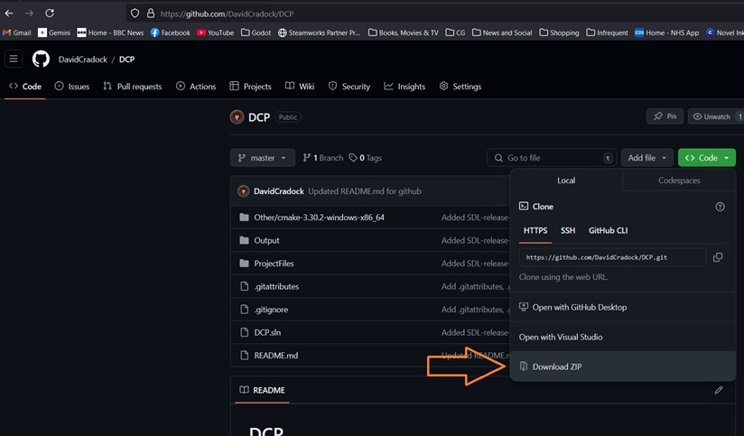

|
Daves Coding Paradise 0.1.1
Daves Coding Paradise
|
|
Daves Coding Paradise 0.1.1
Daves Coding Paradise
|
To get started, I recommend building everything by following the instructions below which will enable you to run the various executables which can be found in the /Output/Executables directory to get to see the whole thing running in action! Then with the solution still loaded inside Visual studio, look at the various example projects which show how to do various stuff such as simple things, like opening a window. One you've messed around a bit, come back to this documentation and look at DCL for more details.
Download or obtain the project and uncompress somewhere, a nice fast SSD would be a lovely location, or a RAM disk would be awesome :)Download the project from Github
Here, I explain how to setup your system to build everything.
Install Microsoft's free community edition of Visual Studio, or a more expensive version if you prefer ;p At the time of this being typed, you can goto https://visualstudio.microsoft.com/downloads/
Now we have to install the Vulkan SDK onto our system. Go goto https://vulkan.lunarg.com/ and download the latest Vulkan SDK for Windows. Or you can use the pre-downloaded file located in /Other/SDKs/VulkanSDK-1.3.290.0-Installer.exe Click next, next, next, next, accept the license, next and finally Install button. Once that's done, close the window. NOTE: Due to github's 100MB file limit, the installer is not included. We install the Vulkan SDK so that the various debug layers work. Without installation, they will not. It would be nice to not have to do this because I like all my libraries offline and the installer isn't. However, get over it David! If the internet goes down for some reason, then I think there's more to worry about than "My project can't download files". Problems such as "Holy crap! The internet has gone down! What has happened to the world!?" I really need to adjust my way of thinking, hating online requirements. I think it's because I grew up in an offline world. Don't be an old fuddy duddy! The installer adds a system path called "VK_SDK_PATH" Which points to where ever the SDK was installed. Looking at my system right now, that is "C://VulkanSDK//1.3.290.0". We could use C:\VulkanSDK\1.3.290.0 in the various project settings pages to reference this directory when adding include files and libs. The installer also enables usage of the Vulkan debug layers which is usefull indeed. Please remember that this stuff isn't available on end-users' machines unless they also install the SDK, which should NOT be a requirement for them to use my software. Therefore the SDK installation is required for the debug stuff to work, that's why we install it. Now you just have to click on the menu item of Visual studio "Build" and select "Batch Build...", "Select All" and hit "Build". After that's done (It'll take a while, longer than expected probably because I chose to NOT use precompiled headers (I have my reasons!)), you can go to your file browser, navigate into the /Output/Executables directory and run all those little things :) Done!